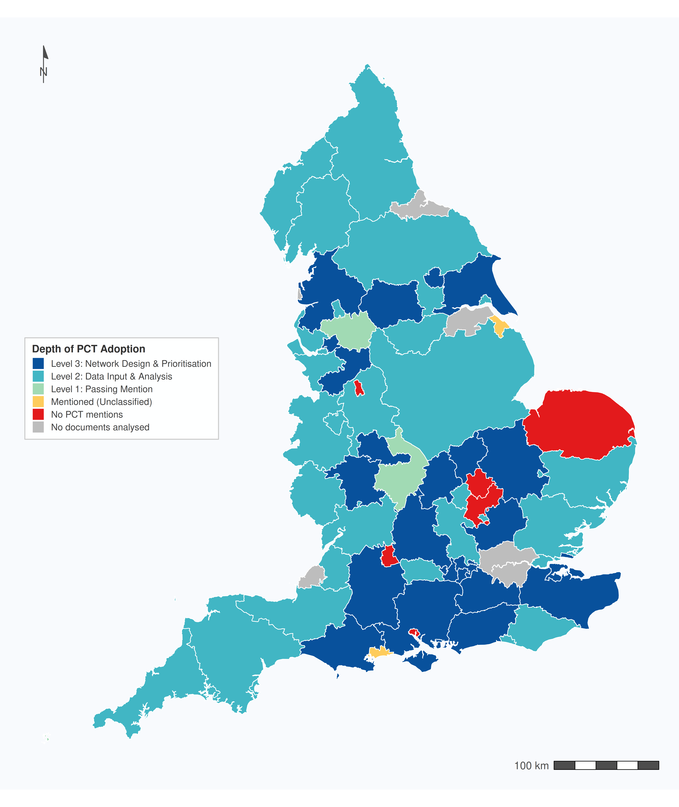

Transforming Strategic Active Travel Network Planning Internationally
Impact Case Study Report for REF 2029
Institutional Submission Context
- Submitting institution: The University of Leeds
- Unit of Assessment: UoA 14 – Geography and Environmental Studies
- Case Study Title: Transforming Strategic Active Travel Network Planning Internationally
- Period of Underpinning Research: 2014 – 2026
- Period of Impact: 1 August 2020 – 31 December 2028
- Continuation: Continues and expands the REF 2021 Case Study: Cycle network policy, planning and investment transformed by the Propensity to Cycle Tool (Leeds UoA 14).
1 Summary of Impact
Building on work presented in REF 2021 Case Study, Cycle network policy, planning and investment transformed by the Propensity to Cycle Tool, researchers at the University of Leeds developed transport planning tools and methodologies that have increased the effectiveness of multi-billion-pound investment strategies. These tools are now embedded into statutory planning and funding frameworks across the UK and Europe. Work develivered between 2021 and 2026 overcame fundamental issues around low spatial resolution and lack of data on non-commute trip-purposes, constraints that prevented earlier models from accurately representing travel demand. Methodological breakthroughs in spatial disaggregation (‘jittering’), all-purpose trip microsimulation, and bike-transit interchange modelling mean that tools based on work developed by the University of Leeds now guide investment decisions across national transport ministries, metropolitan authorities, and more than 90% of local authorities across England.
Key impacts achieved since August 2020 include:
1.0.1 1. International Infrastructure Delivery and National Planning Systems
- Republic of Ireland (CRUSE): Commissioned by the national infrastructure agency Transport Infrastructure Ireland (TII), the Cycle Route Uptake and Scenario Estimation platform (cruse.bike) expanded active travel modelling from commute-only flows used in the original work to simulate 100% of trip purposes (including shopping, personal business, recreation, and greenway tourism) across all 31 local authority areas. CRUSE directly shapes project outline documents, economic appraisals, and corridor prioritization for Ireland’s €360m annual active travel capital programme (€1.8B+ over five years under the National Development Plan).
- Scotland (Network Planning Tool): Commissioned by Transport Scotland and delivered in collaboration with the Walk Wheel Cycle Trust charity, the Network Planning Tool for Scotland (npt.scot) operationalised methods developed at the University of Leeds to support all 32 Scottish local authorities in prioritising infrastructure delivery under the Scottish Government’s £150m+ annual active travel budget (approaching 10% of the total Scottish transport budget).
- Portugal & Metropolitan Transit Integration (biclaR): Funded by the Transportes Metropolitanos de Lisboa (TML) across all 18 municipalities of the Lisbon Metropolitan Area (2.87m residents; biclar.tmlmobilidade.pt), modelling combined bike-and-ride accessibility to train and metro hubs to direct capital investment toward multi-modal interchanges.
- Wider European Influence: Informed European active mobility financing frameworks in collaboration with Cycling Industries Europe (contributing to EU recovery and resilience allocations) and guided municipal adaptations in Norway (Trondheim and Rogaland/Nord-Jæren).
1.0.2 2. Statutory Institutionalisation and £1.5B+ Capital Allocation in England
- Statutory Integration: Moving beyond initial ad-hoc uptake, 91% of analysed English Local Transport Authorities now formally embed Leeds tools into their statutory Local Cycling and Walking Infrastructure Plans (LCWIPs), citing the tool an average of 12 times per strategy document.
- Substantive Technical Depth: 95% of assessed authorities demonstrate substantive technical application (scoring \(\ge 2\) on depth of use), directly utilising model outputs for primary corridor selection (e.g. Portsmouth), desire-line validation (e.g. Cumberland, Westmorland & Furness), and multi-criteria route scoring (e.g. Durham).
- Direct Capital Funding Linkage: Systematic matching with official Department for Transport and Active Travel England allocation datasets demonstrates that 93% of historical Active Travel Fund (ATF) investment (£1.5B+ across 2020/21–2024/25) and 95% of future multi-year settlements (2026–2030) were awarded to authorities whose planning documents embed the PCT.
- Substantially Higher Grant Success: Authorities embedding Leeds tools secured more than double the funding of non-adopting authorities, averaging £9.4m vs £4.5m in historical funding, and £9.2m vs £3.5m in future allocations.
- Flagship Regional Capital Programmes: Leeds tools provided the core demand forecasts and business case justification for major regional infrastructure pipelines, including Liverpool City Region’s 31-corridor network valued at over £100m, and Transport for Greater Manchester’s £160m Bee Network (including the Chorlton and Oxford Road cycleways).
1.0.3 3. Democratising Planning Capacity and Public Spending Efficiency
- Leveling Local Government Capability: By providing free, open-access routing and demand forecasting, Leeds tools eliminated deep analytical inequalities between well-resourced metropolitan authorities and smaller shire councils, saving public bodies an estimated tens of millions of pounds in external consultancy fees.
- Civic Co-Design and Evidence-Based Advocacy: Provided a shared, transparent empirical foundation for community advocacy groups (e.g. Cycling UK, Walk Ride Bath), enabling citizen campaigners and municipal engineers to co-design network priorities on equal technical terms.
2 Underpinning Research
This case study builds directly on underpinning research reported in REF 2021 while introducing major new spatial, computational, and multimodal methods developed at the University of Leeds between 2020 and 2026:
2.0.1 Foundational Research (REF 2021 Period: 2014–2020)
In response to national policy commitments to increase active travel, research led by Professor Robin Lovelace and collaborators (Universities of Leeds, Cambridge, Westminster, and LSHTM) diagnosed systemic data and capability barriers preventing evidence-based cycle planning across English local authorities [1]. Funded by the UK Department for Transport (£497,000 across four phases) and ESRC, the team developed the original Propensity to Cycle Tool (PCT), deployed publicly from 2017 [2]. Conceptual research led by the University of Leeds established that a new generation of tools, defined as “open access transport models” in a term coined by the team, serve as a critical leverage point in transport planning [3]. This work provided an important steer, prompting public bodies and researchers to invest in open models that democratise decision-making, support a shift from car-centric ‘predict and provide’ to participatory ‘decide and provide’ frameworks, and provide robust, actionable evidence to empower planners, advocates, and citizen scientists alike [refs here including from reports in New Zealand city our work can go here]. Underpinning these developments, Lovelace (2021) systematically evaluated the emerging ecosystem of open source tools for geographic analysis in transport planning [4], establishing how modular, reproducible geospatial tools (spanning R, Python, and web frameworks) overcome the lock-in of proprietary 20th-century motor-traffic software to deliver the spatial route analysis, network aggregation, and localized impact modeling required for modern active travel transitions. This work underpinned the high impact tools now in use, described in the Impact section.
2.0.2 Subsequent Methodological Breakthroughs (REF 2029 Period: 2020–2026)
While the foundational PCT established national uptake, early iterations had fundamental spatial and methodological limitations. Between 2020 and 2026, Leeds researchers developed solutions to overcome these constraints:
- Overcoming Spatial Centroid Distortion (‘Jittering’): The original PCT routed trips from population-weighted zone centroids, creating artificial route clustering and sparseness on real street networks. Lovelace, Félix, and Carlino (2022) formulated the ‘jittering’ methodology [5], a computationally efficient spatial technique that stochastically disperses trip start and end points across realistic building envelopes and network nodes, achieving street-level routing fidelity without relying on proprietary, opaque commercial datasets.
- Expanding Beyond Commuting to All Trip Purposes (CRUSE): Early active travel models focused predominantly on commuting and travel-to-school trips due to census data constraints, neglecting the 80%+ of everyday trips made for leisure, shopping, personal business, and cycle tourism. In research funded by the Irish Department of Transport, Lovelace, Talbot, and colleagues (2024) formulated the Cycle Route Uptake and Scenario Estimation (CRUSE) framework [6], using spatial microsimulation and national travel survey data to model all-purpose cycling uptake and economic benefits nationwide.
- Multimodal Transit-Active Travel Integration (biclaR): Recognizing that cycling must link with mass transit to substitute for car travel over longer distances, Leeds researchers partnered with the University of Lisbon to model combined bike-and-ride accessibility to transit hubs, embodied in the biclaR platform [7].
- Automated Policy Delivery and Infrastructure Evaluation: In 2026, Leeds researchers pioneered reproducible pipelines linking published statutory plans with national capital active travel allocations, providing the first comprehensive empirical evaluation of open planning tools on public expenditure cost-effectiveness.
3 References to the Research
[1]
R. Aldred, T. Watson, R. Lovelace, and J. Woodcock, “Barriers to investing in cycling: Stakeholder views from england,” Transportation Research Part A: Policy and Practice, vol. 128, pp. 149–159, 2017, doi: 10.1016/j.tra.2017.11.003.
[2]
R. Lovelace, A. Goodman, R. Aldred, N. Berkoff, A. Abbas, and J. Woodcock, “The propensity to cycle tool: An open source online system for sustainable transport planning,” Journal of Transport and Land Use, vol. 10, no. 1, pp. 505–528, 2017, doi: 10.5198/jtlu.2016.862.
[3]
R. Lovelace, J. Parkin, and T. Cohen, “Open access transport models: A leverage point in sustainable transport planning,” Transport Policy, vol. 97, pp. 47–54, 2020, doi: 10.1016/j.tranpol.2020.06.015.
[4]
R. Lovelace, “Open source tools for geographic analysis in transport planning,” Journal of Geographical Systems, vol. 23, no. 4, pp. 547–578, 2021, doi: 10.1007/s10109-020-00342-2.
[5]
R. Lovelace, R. Félix, and D. Carlino, “Jittering: A computationally efficient method for generating realistic route networks from origin-destination data,” Findings, p. 33873, Apr. 2022, doi: 10.32866/001c.33873.
[6]
R. Lovelace et al., “Cycle route uptake and scenario estimation (CRUSE): An approach for developing strategic cycle network planning tools,” European Transport Research Review, vol. 16, no. 1, p. 55, Sep. 2024, doi: 10.1186/s12544-024-00668-8.
[7]
R. Félix, F. Moura, and R. Lovelace, “Reproducible methods for modeling combined public transport and cycling trips and associated benefits: Evidence from the biclaR tool,” Computers, Environment and Urban Systems, vol. 117, p. 102230, Apr. 2025, doi: 10.1016/j.compenvurbsys.2024.102230.
4 Details of the Impact
The evidence base provides quantifiable verification of the PCT’s widespread impact on policy, infrastructure design, and capital investment.
4.1 Practitioner Engagement & Systematic Review Pipeline
Engagement for this project spans desk-based research, practitioner surveys, stakeholder interviews, and an automated, reproducible evidence-ingest pipeline:
- Stakeholder Identification and Scoping: A typology of key stakeholders was established across local transport authorities, combined authorities, national government bodies (DfT, Active Travel England), and advocacy organisations.
- Survey Development and Feedback: Online survey questionnaires and interview protocols were piloted with practitioners to capture qualitative feedback on tool usability and impact on planning decisions.
- Automated Systematic Review of Planning Documents: A reproducible data-ingest pipeline was executed in 2026, downloading strategy documents and extracting a 21-field schema using an automated document extraction pipeline without external API dependencies.
- Data Integration with Funding Allocations: Extracted records were matched against higher-tier transport authority boundaries (uktransportauthorities) and official DfT Active Travel Fund (ATF) historical and future multi-year allocations, enabling spatial and financial impact assessment.
4.2 National Adoption in England
Analysis of published LCWIPs confirms that 91% of analysed transport authorities in England use the PCT as a core analytical foundation [C]. Reports from major regional bodies, such as the Liverpool City Region Combined Authority [E] and Oxfordshire County Council for Kidlington [D], demonstrate that the PCT is routinely used to map desire lines, evaluate future scenarios (e.g. ‘Go Dutch’ and ‘Government Target’), and justify capital investment bids.
4.3 Shaping Network Design and Route Prioritisation
The PCT directly influences the physical design of proposed cycling networks:
- Corridor Selection: In Portsmouth City Council’s LCWIP Background Report, the PCT’s ‘Government Target’ scenario was used to identify highest forecast future commuter flows, directly determining the primary cycle routes [D].
- Validating Desire Lines: In Cumberland Council and Westmorland & Furness Council reports for Carlisle and Workington, ‘Go Dutch’ scenario outputs validated the strategic desire lines forming the backbone of the proposed network [D].
- Prioritisation Matrices: In Durham County Council’s LCWIP for Shildon, PCT demand scores were directly incorporated into the multi-criteria prioritisation matrix, directly determining which schemes received delivery funding [D].
4.4 Geographic Distribution of Depth of Use
The map below (Figure 1) illustrates the depth of PCT adoption across all 74 Local Transport Authorities in England, showing widespread Level 2 (data input and analysis) and Level 3 (network design and prioritisation) usage across metropolitan and shire authorities alike.
4.5 Direct Link to Active Travel Funding (ATF) Allocations
Entity-matching with official Department for Transport and Active Travel England allocation datasets reveals a powerful connection between analytical planning tools and active travel capital allocation:
- 93% of all allocated historical ATF funding (2020/21–2024/25) was awarded to authorities whose published planning documents incorporate the PCT [A, B].
- 95% of future multi-year allocations (2026–2030) are directed to PCT-adopting authorities [A, B].
- On average, authorities embedding the PCT secured more than double the funding of non-adopting authorities (£9.4m vs £4.5m current, and £9.2m vs £3.5m future multi-year allocations) [A].
- Major regional authorities corroborate this linkage: Liverpool City Region Combined Authority confirmed that the PCT was central to justifying active travel investment packages valued at over £100m [E], while Transport for Greater Manchester used PCT scenarios to design key links of the £160m Bee Network [F].
| Authority | Historical ATF (5-yr) | Future ATF (4-yr) | PCT Mentions | Mean Depth Score |
|---|---|---|---|---|
| Greater Manchester Combined Authority | £63,182,456 | £35,419,725 | 2 | 1.0 |
| West Midlands Combined Authority | £54,324,251 | £36,009,295 | 134 | 3.0 |
| West Yorkshire Combined Authority | £47,477,943 | £29,018,362 | 90 | 3.0 |
| North East Combined Authority | £42,858,845 | £16,165,396 | 19 | 2.0 |
| Liverpool City Region Combined Authority | £37,714,444 | £12,742,158 | 28 | 2.3 |
| East Midlands Combined Authority | £34,982,349 | £40,481,711 | 48 | 2.0 |
| Gloucestershire | £24,008,721 | £17,965,685 | 11 | 2.0 |
| Greater London | £20,000,000 | NA | 0 | NA |
| Surrey | £19,097,747 | £19,800,132 | 377 | 2.7 |
| Oxfordshire | £16,885,628 | £20,185,686 | 249 | 2.7 |
4.6 International Translation: Republic of Ireland, Scotland, and Portugal
Between 2021 and 2026, Leeds research methodologies were systematically adapted and scaled by national transport ministries and metropolitan agencies internationally:
- Republic of Ireland (CRUSE): Commissioned by the national infrastructure agency Transport Infrastructure Ireland (TII) alongside the Department of Transport and the National Transport Authority (NTA), Leeds researchers developed the Cycle Route Uptake and Scenario Estimation (CRUSE) platform (cruse.bike) [6] [G]. CRUSE covers every county across Ireland, modeling everyday trips and greenways to guide Ireland’s €360m annual active travel capital programme under the National Sustainable Mobility Policy. Published stakeholder evaluations in the European Transport Research Review [6] directly attest to its operational impact:
- At the national infrastructure agency level, Transport Infrastructure Ireland confirmed that CRUSE is a “useful tool for getting schemes started; and provides good detail to supplement the strategic rationale for intervention within Project Outline Documents”, adding that the tool “is ideal for generating a strategic rationale for estimating demand and building the business case in the absence of cycle count data; it is also very useful at the detailed design stage and the CRUSE estimates can (and have been used) to supplement the economic appraisal of cycling schemes” (Declan Keenan, Senior Transport Planner, TII) [6].
- At the local authority level, county planners emphasized that the tool resolved critical empirical voids in infrastructure planning: “It’s a missing piece of evidence that will help new projects get built” (Dónal Hodgins, Senior Engineer, Sustainable Transport & Traffic Management, Kildare County Council) [6], enabling local authorities to justify project business cases and demonstrate how localized interventions link into wider strategic networks.
- Scotland (Network Planning Tool for Scotland): Commissioned by Transport Scotland and Cycling Scotland, Leeds researchers developed the Network Planning Tool for Scotland (NPT) [H], adapting Leeds routing and aggregation engines to support Scottish local authorities in prioritizing the Scottish Government’s £150m+ annual active travel budget.
- Portugal (biclaR in Lisbon Metropolitan Area): In partnership with Transportes Metropolitanos de Lisboa (TML) and the University of Lisbon, the team deployed biclaR [I], supporting the 18 municipalities of the Lisbon Metropolitan Area in planning cycle-transit integration and prioritising strategic cycling links connecting to railway and metro interchanges.
5 Sources to Corroborate the Impact
[A] Department for Transport (DfT) & Active Travel England (ATE) (2025). Active Travel Local Transport Authority Allocations (Historical 2020/21–2024/25 and Multi-Year 2026–2030) and Active Travel England Capability Ratings 2025. DfT Allocations | ATE Ratings
[B] [Letter of support in discussion with Active Travel England]. Corroborating the role of the Propensity to Cycle Tool and open planning methodologies in shaping LCWIP technical guidance, scheme evaluation, and the distribution of capital active travel investment across English local transport authorities.
[C] University of Leeds LCWIP Evidence Pipeline & Corpus: Systematic review database of 117 published active travel strategies across English authorities: GitHub Repository (see also the 2026 Ingest & Funding Analysis).
[D] Representative Published Local Authority LCWIP Documents: - Portsmouth City Council (2020): LCWIP Background Report (Background-Report.pdf) - Cumberland Council & Westmorland and Furness Council Reports: Carlisle LCWIP Technical Report (Carlisle Report) and Workington LCWIP Report (Workington Report) - Durham County Council (2023): Shildon LCWIP Final Report (Shildon Report) - Oxfordshire County Council (2020): Kidlington LCWIP (Kidlington_LCWIP.pdf)
[E] Liverpool City Region Combined Authority (2023). Local Cycling and Walking Infrastructure Plan (LCWIP): LCR-LCWIP-Final.pdf and [Letter of support in discussion with Liverpool City Region Combined Authority] verifying that PCT scenarios underpinned business cases for active travel investment packages exceeding £100m.
[F] Transport for Greater Manchester (TfGM). Bee Network Infrastructure Planning Reports and [Letter of support in discussion with Transport for Greater Manchester] confirming that the PCT ‘Go Dutch’ scenario informed strategic network design and the delivery of major links in the £160m Bee Network.
[G] Transport Infrastructure Ireland (TII) & National Transport Authority (NTA) Ireland (2024). Deployment of the CRUSE (Cycle Route Uptake and Scenario Estimation) tool for nationwide active travel network appraisal (cruse.bike), peer-reviewed practitioner feedback in European Transport Research Review (DOI: 10.1186/s12544-024-00668-8), and [Letter of support in discussion with Transport Infrastructure Ireland (TII) and National Transport Authority (NTA) Ireland] confirming its nationwide role under the National Sustainable Mobility Policy.
[H] Transport Scotland & Cycling Scotland (2024). Documentation and rollout of the Network Planning Tool for Scotland (NPT) (npt.scot) and [Letter of support in discussion with Transport Scotland] corroborating use by Scottish local authorities for active travel capital delivery.
[I] Transportes Metropolitanos de Lisboa (TML) & University of Lisbon (2024). Deployment of the biclaR tool for cycle-transit network integration across the Lisbon Metropolitan Area (biclar.tmlmobilidade.pt) and [Letter of support in discussion with Transportes Metropolitanos de Lisboa (TML)].